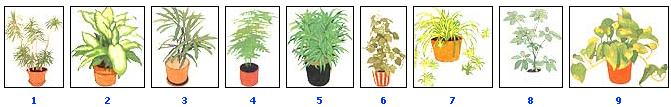
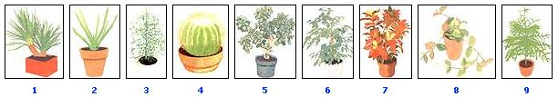

House Plants
Illustrated guide to the best indoor plants.
By Laurie M. O'Boyle
November/December 1987
Bring the blessings of living greenery into your home.
SHADY-LIGHT COMPANIONS ILLUSTRATIONS BY JOEL POPADICS
MEDIUM-LIGHT COMRADES ILLUSTRATIONS BY JOEL POPADICS
How Bright Is Your Light? From sun-blazed savannas to shady, canopied rain forests, the varied natural habitats of tropical plants have caused them to develop differing light-intensity needs. Accordingly, the most important rule of indoor gardening is to select a plant appropriate to your light situation. Remember that radiant energy triggers photosynthesis, the process by which plants produce nourishment and build tissue. The blue and violet waves of the light spectrum promote foliage growth, while the longer red and far-red rays control stem length, leaf size and flowering. The most common artificial light in homes is provided by incandescent tungsten filament bulbs. Incandescent light is rich in red and farred waves, but it does not contain enough blue and violet rays to provide a complete light source for plants.
Natural outdoor light from windows can help supplement incan ment incandescent illumination. Some homes (and most offices) contain overhead fluorescent tubes. These fixtures can be used to achieve a balanced spectrum. Cool white tubes are inherently balanced, or you can combine daylight lamps (high in blue waves) with warm white bulbs (high in red). Still, fluorescent lighting does not exactly duplicate sunlight-and it's certainly not as intense. The minimum light setting acceptable for raising plants, a low-light environment, is that typically created by northern window exposures or by an all-fluorescent setting with no outdoor lighting. A typical medium-light situation would be an east window location with about four hours of gentle morning sun each day or south windows that offer varying amounts of sunlight throughout the day.
The bright-light environment supplies about four hours of strong afternoon and evening light each day through a large west window or wall to-wall southern exposure. Other factors to consider are the directness of the light source (is the plant getting straight or reflected window light?), the proximity of the light source (a plant on a high shelf gets more overhead illumination than one near the floor) and the strength of the source (blinds, curtains or even a build-up of dirt lessen window light). So analyze the radiance of the various locations you want for your houseplants and choose the species that fit those conditions. Otherwise your efforts are doomed from the start.
RADIANCE RELISHES ILLUSTRATIONS BY JOEL POPADICS
Commonsense Care
Sensible selections: Many other plants are as hardy as the ones I've mentioned here. All the same, if you want low-maintenance indoor gardening, you'll probably want to avoid such plants as coleus, begonias, Boston ferns, Swedish ivy and wandering Jew-they require frequent grooming to keep from getting messy and leggy. Plants raised mainly for their flowers, such as the episcia, lipstick vine, goldfish plant and African violet, also require extra grooming and aren't quite so durable. Chrysanthemums, cyclamen, Easter lilies and poinsettias are lovely for a seasonal splash of color but are not the best for permanent decoration.
Hydroculture: Some plants can be easily maintained in a water-filled jar or vase. The arrowhead plant, Chinese evergreen, heartleaf philodendron and many other aroids and lilies grow slowly but keep fresh in soilless culture. Simply arrange the foliage of an unrooted cutting or uprooted whole specimen in a glass or plastic vessel and cover the roots with cool tap water. If the container is clear, the arrangement should be set away from direct sunlight to prevent the formation of algae. (A piece of charcoal placed in the water also helps keep it fresh.) Every three or four weeks, when the water does become cloudy, change the liquid and rinse the roots to provide new oxygen.
Humidity: Indoor heating (especially woodstoves) and air-conditioning systems can bring the humidity level dangerously low for foliage plants. It's particularly important to counteract dryness in the winter. The conventional remedies are to run a humidifier and to frequently mist the foliage. One easier way to help moisten the air is simply to group plants together. You can also amend aridity by setting plants on trays of wet pebbles, which will release moisture as the water evaporates. (Here, too, a few chips of charcoal will keep the water clear.) Don't let the water level touch the pot bottoms. And to avoid stagnation, let the liquid evaporate fully before replenishing it.
Watering: It's difficult to put plants on a strict watering schedule because their needs will vary according to the season, species and size of pots and root systems. Most houseplants, however, should be watered only when the top quarter-inch of soil becomes dry to the touch. If a special variety requires even moisture, keep the soil constantly moist (but not soggy) to the touch. If it likes to go dry between waterings, let the soil completely dry before drenching it.
Always saturate thoroughly from the top of the pot and use slightly warm water. All plant containers should have drainage holes for the elimination of excess water, with saucers underneath to catch the surplus. Empty the saucers within an hour after watering to prevent damage to the root systems. Cacti and succulents require no special care if you're going on vacation, since their native habitats have forced them to learn to deal with drought. Just give them a healthy drenching before you leave. A foliage plant can also survive up to two weeks with no attention if you water it thoroughly and set the pot inside a large plastic bag and away from bright light.
Feeding: Indoor plants should be fed regularly during spring and summer (their active growing season) to replace the nutrients that leach from the soil when you water. A high nitrogen (5-1-1 or 5-2-2) food such as fish emulsion is good for foliage plants. Follow the dilution and application schedule suggested on the fertilizer container. If you keep a busy schedule, you can halve the dilution and frequency of your feedings. By slowing growth, you will reduce the need for grooming and repotting but still meet the plants' nutritional requirements.
Pest management: Aphids, mealy bugs, mites and scale cause the most common indoor insect problems. All such infestations can be successfully managed if treated early. However, since these insects spread rapidly to surrounding plants, you should isolate an affected plant as soon as possible. Leaf discoloration and malformed leaves, especially on new plant growth, are symptoms of an aphid problem, which can be treated by washing the foliage with laundry soapsuds every few days. Mites are microscopic insects that feed on plant juices, evidenced by transparent areas on the leaves and tiny webs on leaf undersides. Treat the same as aphids. Soft, powder-colored mealybugs look like little specks of cotton, clustering at leaf and stem axils. Eliminate them by touching each foamy white site with a cotton swab dipped in rubbing alcohol. Scale, a tiny insect with a scale like covering, may be more difficult to recognize. Symptoms are small brown or black blotches on leaves and stems. These can be removed by gently lifting off the scaly bumps with a sharp, sterile knife and then wiping each location with soapsuds or rubbing alcohol.
Transplanting: Plants periodically need larger containers to accommodate their expanding root systems. Two signals that generally indicate overcrowding are shedding leaves and soil that dries out more quickly than it used to. Another rule of thumb is that large specimens seldom require repotting, whereas smaller plants may need it once or twice a year. Transplanting is most successful during the active growing seasons, spring and summer. Use a clay pot that's one or two sizes larger than the present container. Resist the temptation to use a mammoth-sized container to eliminate the need for future transplants-you may succeed in eliminating the plant! Actually, though, by following these commonsense guidelines and choosing easy to-end plants, you can easily avoid catastrophes. Your houseplants and you should then be able to fully enjoy each other's company . . . for months and years to come.
Editor's Note: Enthusiastic green thumbers-be they flower fans or crop chasers-will be pleased to know that MOTHER's staff is now in the process of preparing a special publication covering your "growing concerns. " The book, which will be a detailed gardener's helper in the tradition of our previous special horticultural guides, should be on your newsstand early in the summer of 1988. We're having fun preparing it, and we think you'll enjoy
reading-and using-it. Keep an eye peeled, this one is sure to "grow" on you!
 1. Arrowhead plant (Syngonium podophyllum): The leaves of this decorative aroid (sometimes called Nephthytis ) are frequently tinged with contrasting shades of cream or ash green, and they rise on long, thin stalks that are easily trained to climb bark or wooden slabs. 2. Chinese evergreen(Aglaonema modestum or commutatum): Durable if slow-growing aroids, the Chinese evergreens make excellent low-spreading table or floor plants that seldom reach over three or four feet tall. Their crisp, green, leathery leaves frequently sport elegant white or silver marbling. 3. Snake plant (Sansevieria trifasciata): The stiff, leathery, sword shaped leaves of this succulent, slow growing lily are blackish green with light green ""snakeskin"" crossbands. This must be the easiest plant ever grown. It can endure neglect. 4. Bird's-nest fern (Asplenium nidus): This' is the best fern for indoor culture because it requires less humidity than many of its relatives?although it does appreciate steady warmth and frequent watering. The stiffly spreading, shiny green fronds surround its nest like crown. 5. Cornstalk plant (Dracaena fragrans Massangeana'): This tall growing floor lily sports rich green, arching leaves, banded with light green and yellow. Chills give the cornstalk brown blotches, but it proves quite durable when provided with warm temperatures and adequate moisture. 6. Parlor palm (Chamaedorea elegans): This durable feather palm and the related, slower growing""Neanthe bella"" bear clustering frond, and can range in height from one to 10 feet. An indoor gardening , classic, it seldom needs repotting and takes well to low-moisture environments. 7. Cast-iron plant (Aspidistra elatior): True to its name, this Chinese lily tolerates all kinds of abuse, even night temperatures as chilly as 50?F. Its oblong, blackish green, cornlike leaves slowly grow to 30 inches long. 8. Heartleaf philodendron (Philodendron scandens): A fast grower, the heartleaf philodendron has deer green, heartshaped' leaves that will climb a support or cascade from hanging baskets. 9. Peace lily (Spathiphyllum): The classically elegant peace lily bears glossy, softly plaited leaves. Its white, spathelike flowers (frequently appearing in winter) rise on slender stems and provide a striking contrast to the dark foliage. Houseplants are good for us. Their presence eases much of the stress that leads to disease and may even lower blood pressure and blood sugar. Some, such as the spider plant, actually act as air purifiers, absorbing formaldehyde and other toxic indoor fumes. Beyond the health benefits, houseplants provide a living link with nature, make pleasant winter companions and lend softness and warmth to our surroundings. The problem, though, is that most indoor environments are not good for plants?after all, homes are designed to provide human comfort. Modern interiors are generally very dry, whereas many houseplants are tropical and subtropical natives that require high humidity. And indoor environments often rely on artificial lighting, which may be insufficient for many plants. So indoor gardening is not simply a ""pot and forget"" proposition. A lot of houseplants fail to flourish because of inappropriate environment or inadequate care. To increase your own chances for success, I'm going to recommend a variety of very durable, adaptable specimens and then offer a commonsense approach to caring for them. |
 1. Madagascar dragon tree (Dracaena marginata): A popular lily, this hardy, bushlike ornamental can slowly grow to 16 feet high. Its slender, cane like stems are topped with shiny, red-margined leaves. For best results, keep it in a small container. 2.Dumb cane (Dieffenbachia picta): This tropical American native is prized for its ornamental variegated leaves on tall growing, thick green canes. Dumb cane earned its name because the noxious sap in its stem causes pain and swelling when swallowed. 3.Lady palm (Rhapis excelsa): This reliable fan palm carries bamboolike canes and glossy, dark green, leathery leaves. The versatile lady adapts to warm and cool temperatures alike. 4. Asparagus fern (Asparagus setaceus or plumosus): This lacy, fernlike lily family member bears wiry stems with flattened fronds carrying fine, hairlike greenery. It makes a long lasting, luxurious basket plant. The related Sprengeri fern (A. densiflorus`Sprengeri') has a fluffier appearance. 5.Striped dracaena (Dracaena deremensis warneekeii'): Long, sword -shaped, leathery leaves with white center stripes grow from a thick, tall-growing cane. This durable dracaena does well in dry environments. 6. Grape ivy (Cissusrhombifolia): The long, bending branches of this vine sport deep green, wavy-toothed leaflets. The cascading rambler forms a lush, decorative plant for baskets or trellised pots. Pinch it back occasionally to promote denser growth. 7. Spider plant (Chlorophytum comosum): Long, wiry, flowering stalks cascade spiderlike from the pot, forming little airborne plantlets that give the spider its alternative name: the airplane plant. The ivory-banded basket plant adapts well to cool temperatures. 8. Umbrella tree(Brassaia actinophylla): The familiar umbrella, or schefflera, is admired for the grand rosette produced by its compound leaves. The fastgrowing aralia makes an excellent tall-growing tub plant. But it dislikes drafts and is very sensitive to overwatering, so keep it warm and let it dry well between waterings. 9. Devil's ivy (Scindapsus aureus): A popular philodendron cousin (also known as pothos or hunter's-robe), devil's ivy is a green, fleshy viner suitable for basket or trellis culture. (The popular cultivar `Marble Queen' has regal white variegation.) It relishes warmth and likes to go dry between waterings. |
 1.Yucca tree (Yucca gloriosa): Also called the palm lily, the yucca has a woody trunk topped with a rosette of stiff, leathery, sword-shaped leaves. The sturdy plant tolerates many adversities and likes to go dry between waterings. 2. Medicine plant(Aloe vera): This slow growing lily relative excellent for a sunny table or windowsill. Its gray-green, dagger shaped leaves?marked by soft spines along to edges?contain the skin-healing inner pulp that 'explains its ""first-aid"" nickname. 3. Pencil cactus(Euphorbia tirucalli): This bizarre succulent shrub has pencil-thick, glossy green cylindrical branches that contain a milky white sap. Also called the milkbush, it is a durable, but slow, grower. 4. Golden barrel cactus (Echinocactus grusonii): The barrel carries sharp, golden spines on a globular, light green, ribbed base. Like other cacti and succulents, it enjoys a porous, gritty soil (two parts loam to one part sand) and should be allowed to dry between waterings. 5.Jade plant (Crassula argentea): The stout trunk of the jade (also called the monkey tree or Chinese rubber plant) has thick, bending branches which bear fleshy, succulent leaves. A durable species, it adapts well to drafts and dry locations. 6. Weeping fig tree(Ficusbenjamina): This graceful mulberry carries small, shiny, deep green leaves that are pointed at the tips. In warmth and good light, it becomes densely Foliated, but under adversity it sheds readily. Keep it in a small container. 7.Craton(Codiaeum variegatum pictum): This showy tropical tub plant sports magnificent multicolored leaves in many shapes and patterns. Strong sunlight helps young! yellow-flecked foliage turn orange and red. For best results, keep a pebble-filled tray beneath a croton pot to increase humidity. 8.Wax plant(Hoya carnosa): A wining milkweed, the hoya bears thick, leathery leaves and long, persistent spursthatproduce fragrant, pinkish white flowers. An ideal hanging basket plant for sunny windows, it appreciates good drainage along with liberal summertime watering. 9. Norfolk bland pine (Araucarta heterophylla): The long, wide-spreading branches of the Norfolk (also called star-pine or Christmas tree plant) extend parallel to the ground and are set with soft-pointed needles. It tolerates heat, chills, and some drying out. |